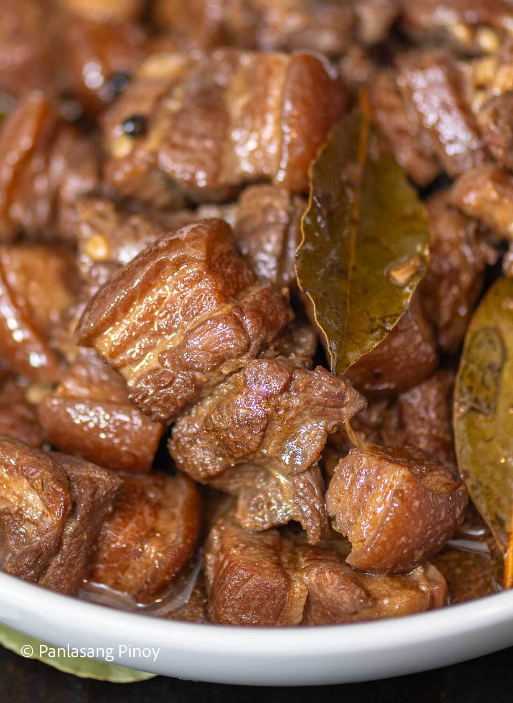

Chicken Adobo

Description
Chicken adobo is a popular Filipino dish made with chicken, soy sauce, vinegar, garlic, and other seasonings.
Ingredients
- Chicken
- Soy sauce
- Vinegar
- Garlic
- Black pepper
- Water
Steps
- Put the chicken in a pan.
- Add soy sauce, vinegar, garlic, and pepper.
- Add water and bring it to a boil.
- Simmer until the chicken is cooked.
- Serve with rice.
Back to Home